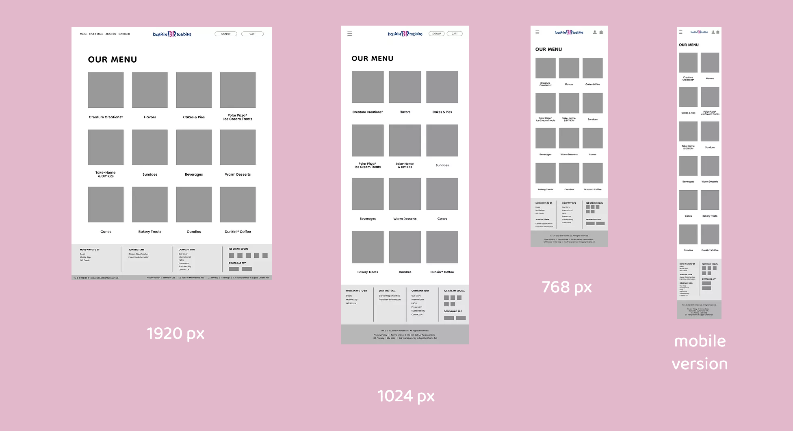

December 2021
Redesigned a responsive web design for the official Baskin Robbins U.S. website after analyzing the brand identity and re-organizing the structure of the site. Created responsive web designs for 1920px, 1024px, 786px, and 375px.
Why
The Baskin Robbins needs more caution in the users' experiences. The website is difficult to navigate because of the unorganized site map. Also, a united design theme doesn't exist. A redesign of the website to show the brand identity and meet the user experience goal needs to be done.
How
Design
Project
Self-Initiated

Analyzing Baskin Robbin's brand identity.

Analyzing Baskin Robbins' current website elements and key features.
HOMEPAGE
Sub Page - MENU PAGE
I have focused on round fonts that would give a friendly feeling to the users. The color schematic is focused on blue(#134581) and pink(#FF5399), which both are Baskin Robbin's representative colors. Icons are inspired by the Baskin Robbins theme of having a spoon and a scoop of ice cream.
HOMEPAGE
Sub Page - MENU PAGE
HOMEPAGE
Sub Page - MENU PAGE
When the menu is clicked on the 1920px screen, there will be a menu page sliding down to show different menu options. For 1024px, 768px, and mobile version, when clicking the hamburger menu icon, the list of pages will scroll down as show below.